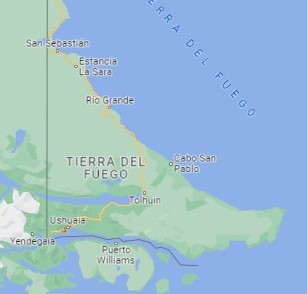
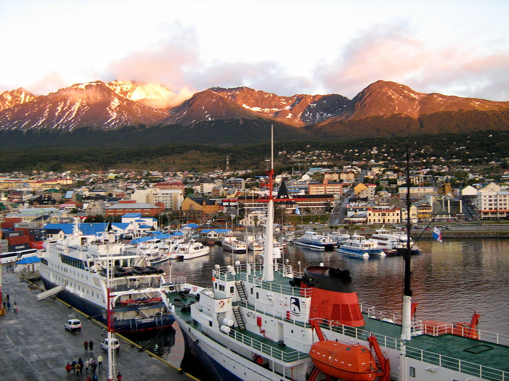
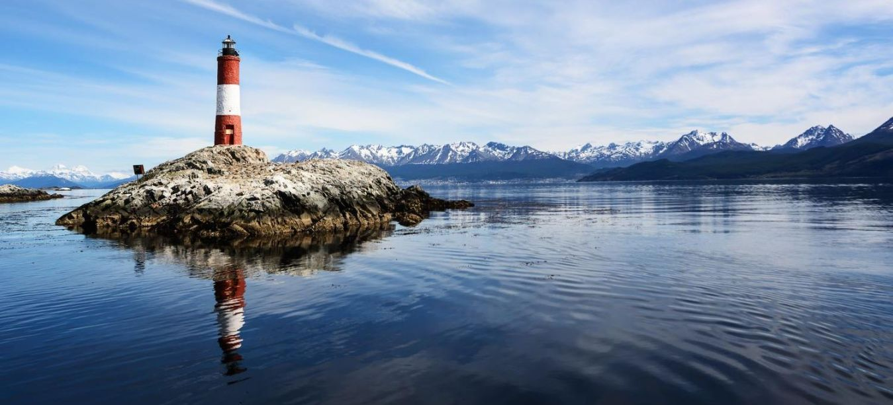
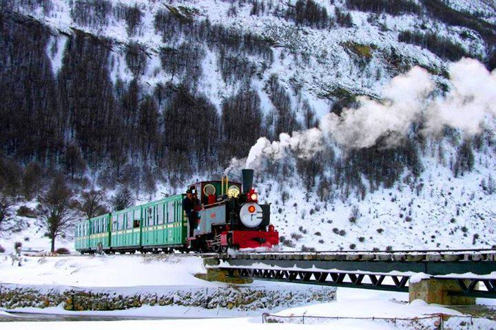
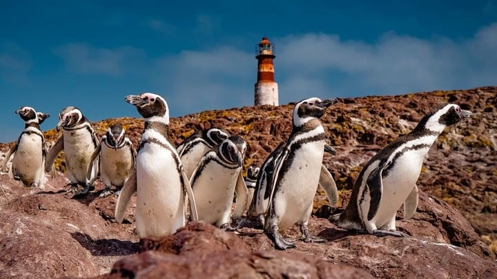

"DONDE COMIENZA LA AVENTURA"
Fin del Mundo: La ciudad más austral de Argentina, se encuentra en el extremo sur de América, en el archipiélago de Tierra del Fuego. Conocida como el "Fin del Mundo", esta ciudad ventosa ofrece una vista impresionante de los montes Martial y el Canal Beagle.
Puerta a la Antártida: Es un punto de partida importante para los cruceros hacia la Antártida y las excursiones a la Isla Yécapasela, también llamada "Isla Pingüino", por sus colonias de estas aves icónicas.

Naturaleza en Todas las Estaciones: Con un clima frío en invierno y temperaturas agradables en verano, Ushuaia es un paraíso para los amantes de la naturaleza. Desde esquiar en invierno hasta hacer senderismo en verano, pasando por visitas al Parque Nacional Tierra del Fuego, siempre hay actividades emocionantes que hacer.
Exploración Marina: Las excursiones en barco por el Canal Beagle son imperdibles, donde podrás visitar la Isla de los Pájaros y el famoso "Faro del Fin del Mundo".
Tren al Fin del Mundo: No te pierdas el pintoresco "Tren del Fin del Mundo", que te lleva a través de paisajes impresionantes.
Ushuaia, un destino que combina naturaleza salvaje y aventura en un rincón remoto de Argentina.
¡Vení y explorá el comienzo de una gran aventura!